- Producción primaria
- La Tierra, en relación a
- la energía,
- Recibe un flujo continuo de energía procedente del Sol.
- 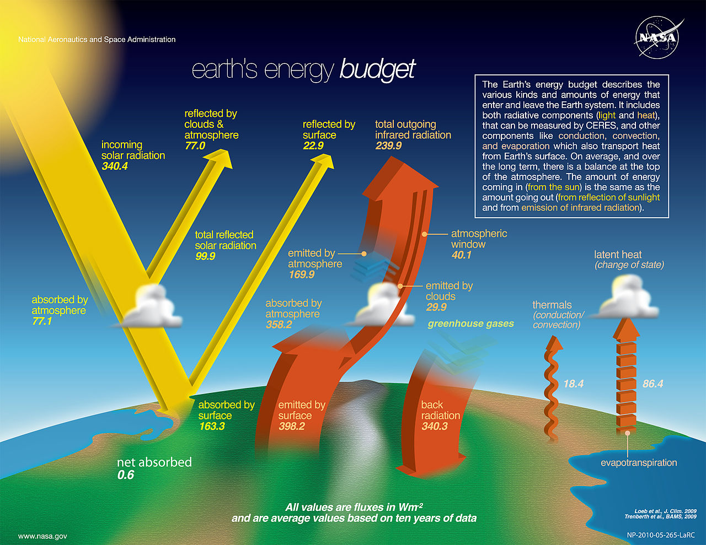
- Mantiene algo de energía interna (núcleo y manto) procedente de
- Desintegración radiactiva de isótopos.
- Calor primordial restante desde el origen del planeta.

- la materia (o masa),
- se mantiene invariable (más o menos)
- entradas mediante meteoritos y polvo espacial.
- salidas mediante "fuga de hidrógeno y helio"
- Los seres vivos necesitan energía y materia.
- La vida ha "aprendido" a usar la energía solar para generar estructuras complejas que se mantienen con el continuo reciclaje de materia.
- Mecanismos de captura de energía
- Utilizan energía "externa" a los seres vivos para producir moléculas orgánicas ricas en energía que pueden usar en su metabolismo.
- Tipos
- Fotosíntesis
- Quimiosíntesis
- Mecanismos de utilización de energía
- Utilización de moléculas ricas en energía para mantener el metabolismo propio de los seres vivos.
- Respiración (varios tipos)
- Resultado: Flujo de energía y ciclo de materia
- 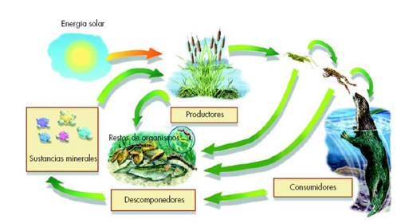
- Conceptos generales
- Producción primaria
- Tasa de fijación de energía por parte de organismos autótrofos por unidad de superficie. La energía fijada se usa en generar biomasa.
- Kcal/m2/año
- g/m2/año
- Biomasa
- Masa de organismos vivos por unidad de superficie
- Kcal/m2
- Kg/m2
- Es el "lugar" en el que se "almacena" la energía capturada por los autótrofos.
- Necromasa
- Masa de materia orgánica muerta por unidad de superficie.
- El destino de esta necromasa puede ser
- Recilaje: vuelve a integrarse en la biomasa. Descomponedores.
- Se retira del ciclo de materia: va a un reservorio.
- Producción primaria bruta (PPB)
- Tasa total de asimilación de biomasa por parte de los autótrofos.
- Producción primaria neta (PPN)
- Producción primaria bruta - respiración de los autótrofos.
- Productividad
- Tasa a la cual se va produciendo biomasa en relación a la ya existente.
- Producción / biomasa
- Productividad neta = PPN / Biomasa
- Productividad bruta = PPB / Biomasa
- Tiempo de renovación
- Tiempo que tardaría en renovarse toda la biomasa con una productividad dada
- Biomasa / PPN
- Relación material y energía a escala local
- Producción primaria
- Fotosíntesis
- 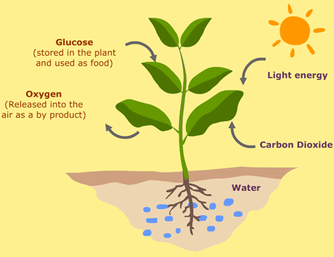
- Captura energía del Sol
- Extrae nutrientes del suelo
- Bombea CO2 desde la atmósfera a los sistemas vivos
- Bombea H2O desde el suelo hasta la atmósfera
- H2O gas: evapotranspiración.
- O2: Fotosíntesis
- Quimiosíntesis
- 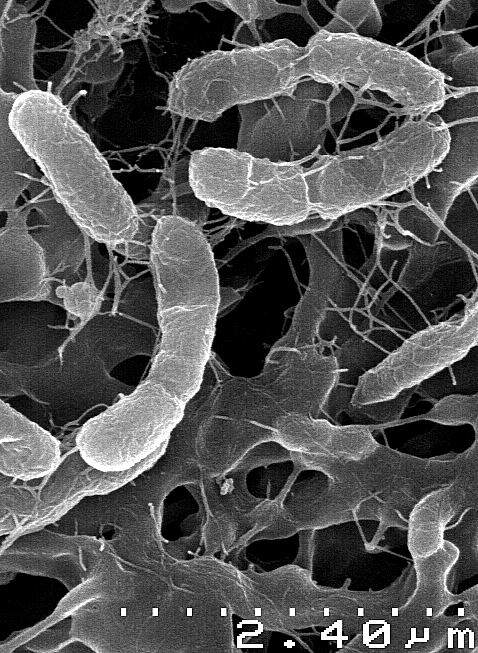
- Ecosistemas de fumarolas en dorsales medio oceánicas.
- 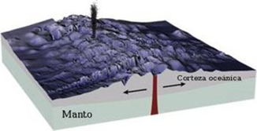
- 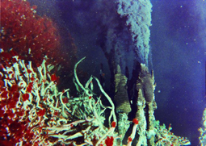
- Respiración
- Transforma materia orgánica en inorgánica
- Bombea CO2 (u otros gases) a la atmósfera
- Incorpora nutrientes al suelo
- Tipos
- Aerobia
- El oxígeno es el principal oxidante. Liberan CO2
- Fermentación
- """Aerobia incompleta"""
- Anaerobia
- Usan sulfato o nitrato como oxidante.
- Escala global
- Cada año, los organismos fotosintetizadores, fijan 100.000 millones de toneladas de carbono.
- Esta capacidad da forma a la distribución de la biomasa entre los distintos niveles tróficos. El 99 % de la biomasa del planeta es de productores.
- Distribución en el planeta


- Es mayor en las zonas tropicales: relación con la radiación.
- Factores que controlan la producción primaria
- hemos de tener en cuenta la ley del mínimo de Liebig
- 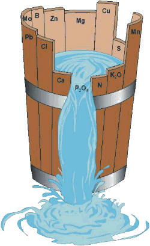
- El crecimiento de una planta (o de cualquier organismo) está condicionado por aquel factor que se encuentra en menor proporción en su entorno.
- Sistemas terrestres
- Precipitación y temperatura
- 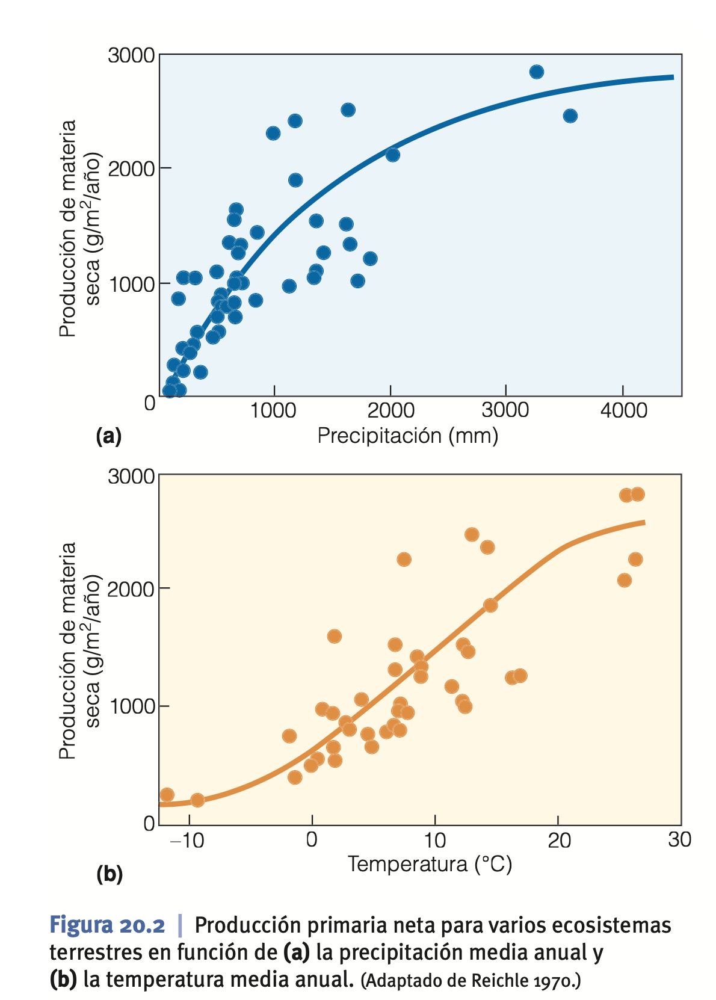

- Nutrientes
- A escala local es determinante.
- A escala global no afecta porque los cambios en la concentración de nutrientes ocurren a escala local.
- 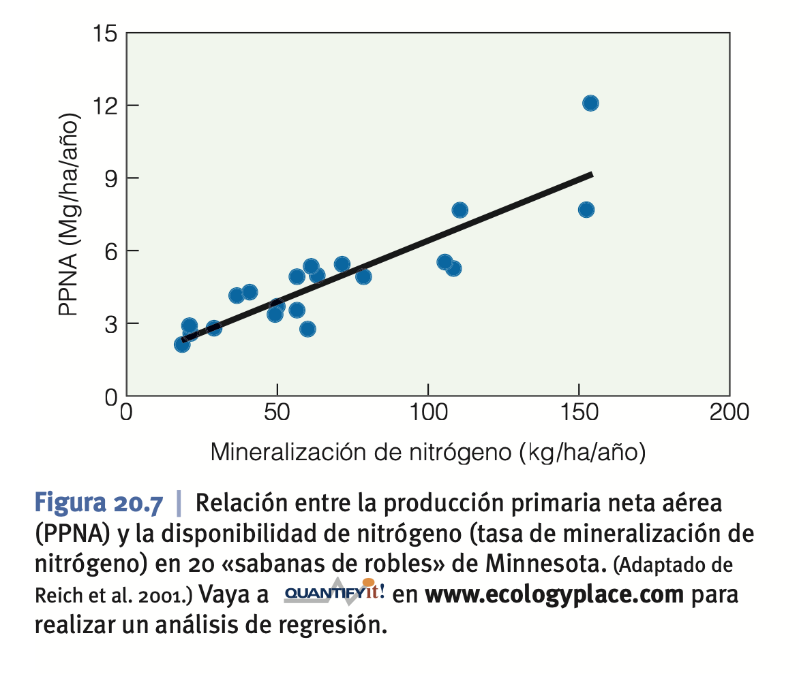
- Concentración de CO2
- En teoría, a más CO2, más producción.
- Siempre que el CO2 sea el factor limitante...
- ¿Cómo afecta a la producción el hecho de que haya más CO2 en la atmósfera?
- Los bosques jóvenes sí parecen estar creciendo más rápido.
- No está claro que a más fotosíntesis haya más crecimiento. También hay más respiración.
- En cultivos sí que se puede utilizar para obtener más producción.
- Sistemas acuáticos
- Luz
- La radiación fotosintéticamente activa (PAR) disminuye exponencialmente con la profundidad.
- La fotosíntesis alcanza su máximo en niveles intermedios de PAR
- La tasa respiratoria no parece cambiar con la profundidad
- 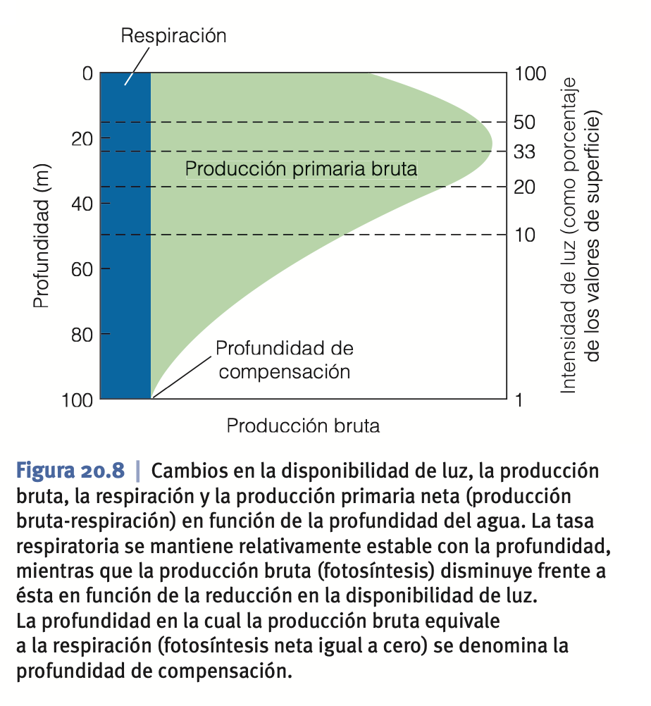
- Nutrientes
- N y Fe son los nutrientes limitantes en el océano
- Los nutrientes proceden de
- precipitación (inmensa minoría)
- Arrastres de la costa
- Corrientes oceánicas que suben desde el fondo
- Distribución asimétrica y heterogénea de nutrientes.
-
- 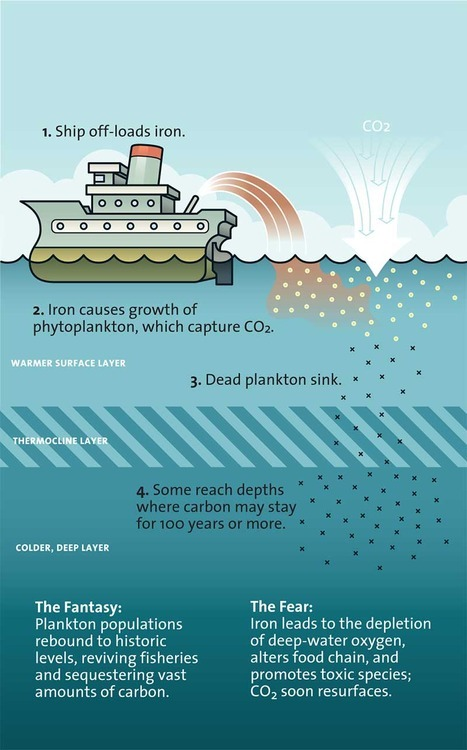
- La limitación está en la gran distancia entre la zona con luz y la zona donde abundan los nutrientes.
- 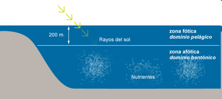
- Cambio temporal
- Evolución temporal de la producción primaria
- Corto plazo: lo que vemos en la práctica de NDVI.
- Medio plazo: sucesión ecológica.
- Largo plazo: evolución